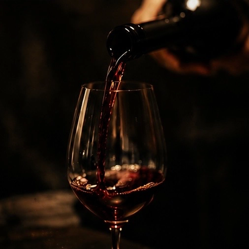
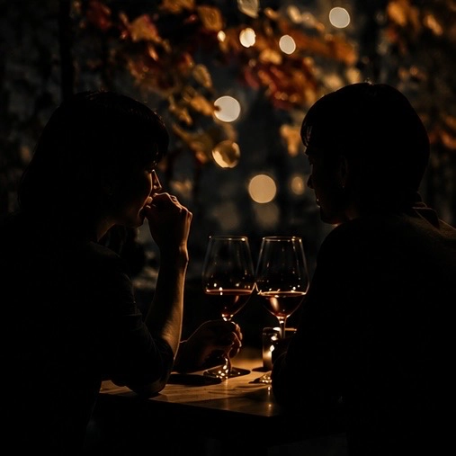
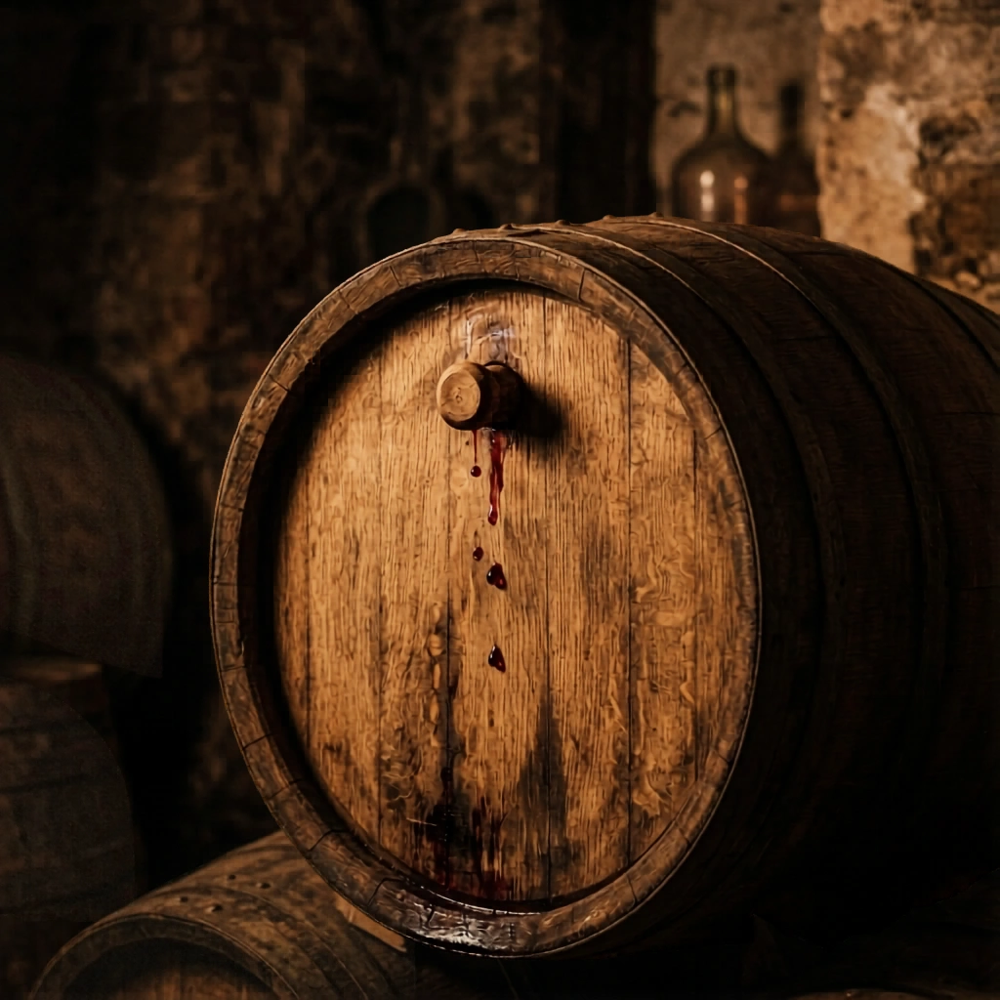
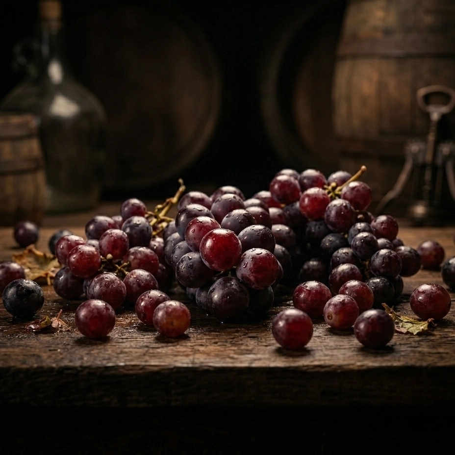




OTONA NO NAGOYA
Autumn Wine Issue 2026
東海のワインカルチャーを特集する、
「大人の名古屋」秋の特別編集企画。
Perspective
効率だけを求めるなら、WEB広告の方が優れているかもしれません。
けれど、本当に価値を理解する人ほど、
「誰が薦めているか」を静かに見ています。
一瞬で流れていく情報ではなく、
時間をかけて読まれる編集物だからこそ届く層がある。
大人の名古屋は24年にわたり、
東海の“本当に良い店”を紹介し続けてきました。
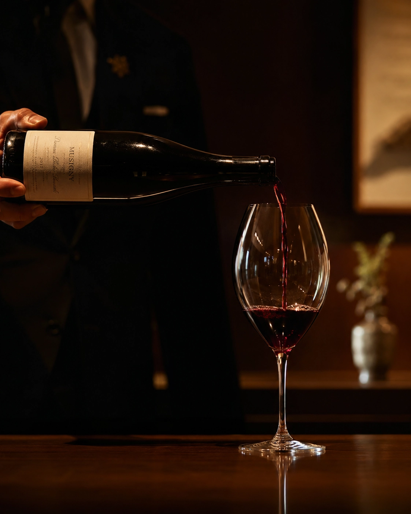
Why Print
流行ではなく、積み重ねによって信頼を築いてきた媒体。
ムック本として1年以上書店流通。
“掲載した瞬間”で終わらない。
安さではなく、“価値”で選ぶ読者へ。
掲載実績そのものが、店の信用資産になる。
料理だけではなく、 空間・時間・人まで含めて記憶に残る。
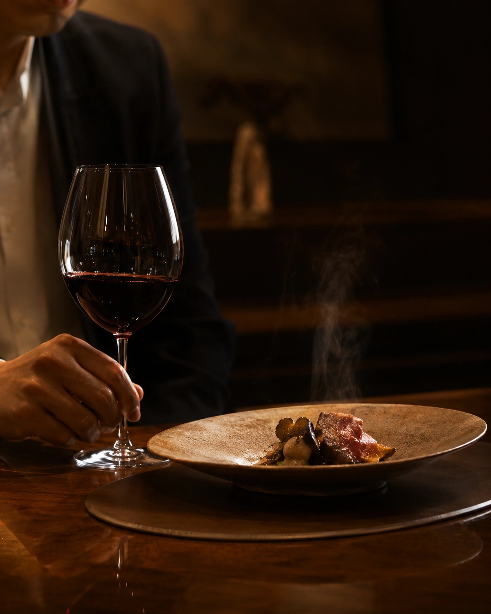

Last Autumn Issue
「誌面を見て来店した」という声を、多くの掲載店様からいただきました。
掲載後にテレビ・新聞取材へ発展したケースも。
WEBサイトや営業資料に誌面掲載実績を活用する店舗様も増えています。
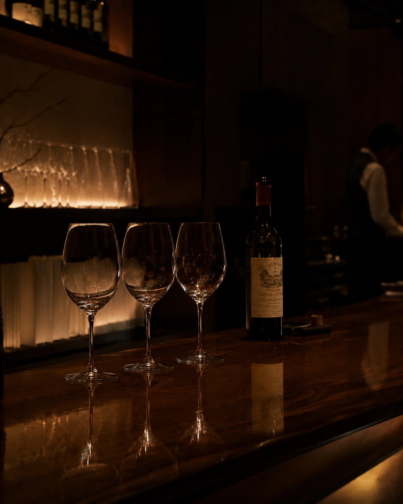
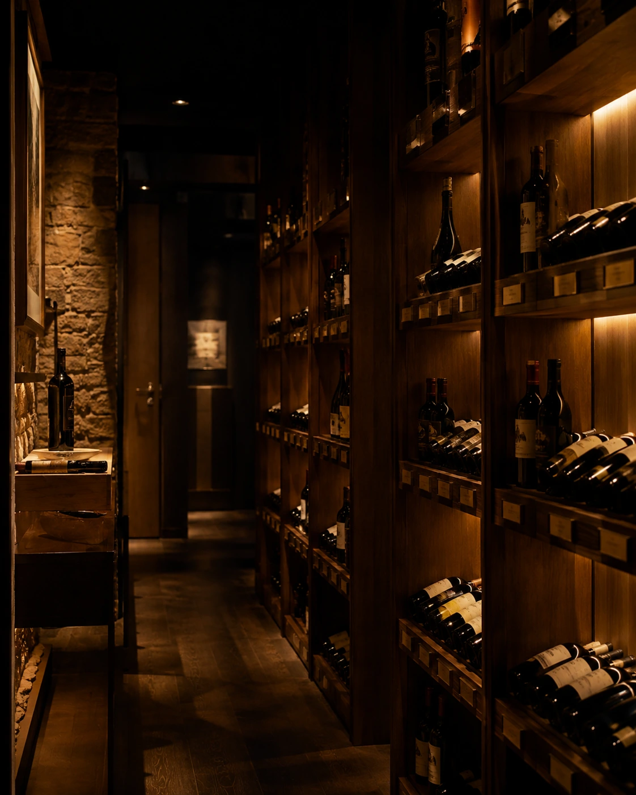
Archive
“広告枠”ではなく、編集としてどう表現されるのか。
昨年の実際の誌面をご覧ください。


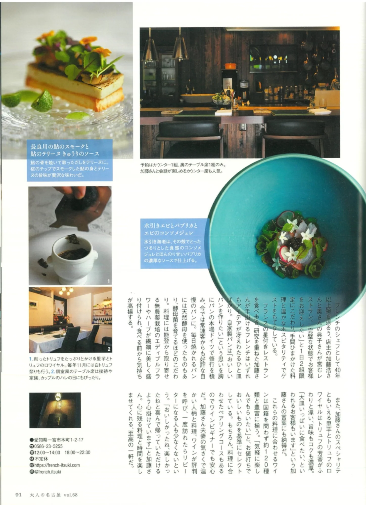
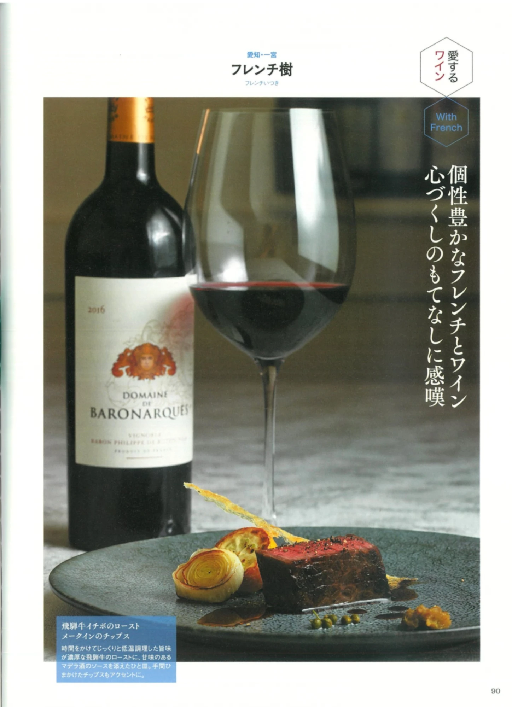


Audience
ほとんど全ページを読むと回答
40〜60代中心のアクティブ層
高感度・高購買層へリーチ
誌面閲覧後に実際に来店
Creative Direction
単なる店舗紹介ではなく、
空間・思想・接客・時間の流れまで含めて設計。
ディレクター、フォトグラファー、ライターが共創し、
“この店へ行く理由”を誌面として立ち上げます。
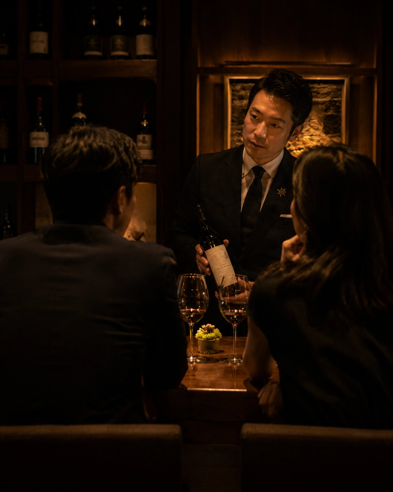
Media Information
2026年9月末
ワイン特集号
有償タイアップ企画
飲食店・ワイナリー・輸入業者 他

Autumn Wine Issue 2026
ご興味をお持ちいただけましたら、
本DM・メールへそのままご返信ください。
企画概要・掲載料金・スケジュールをご案内いたします。
企画詳細について返信する